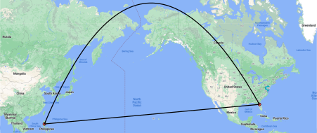
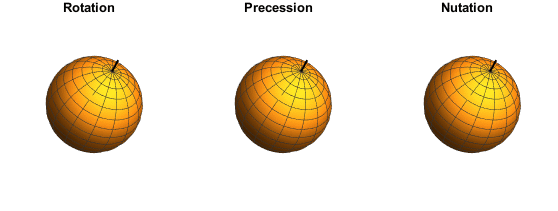
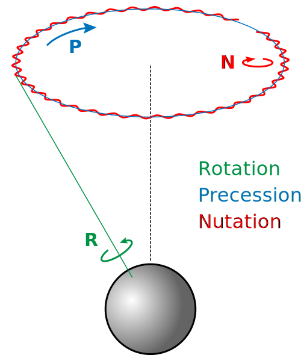

OBSERVATIONAL ASTRONOMY
Chapter 4: Applications of the Spherical Triangle
Non-intuitive Results
The shortest path from Florida to the Philippines flys north of Alaska. Even though the Philippines is south of Florida.

Herschel Milky Way Map
Nutation

